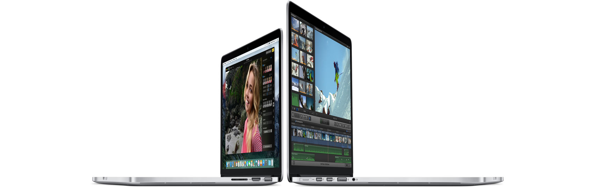
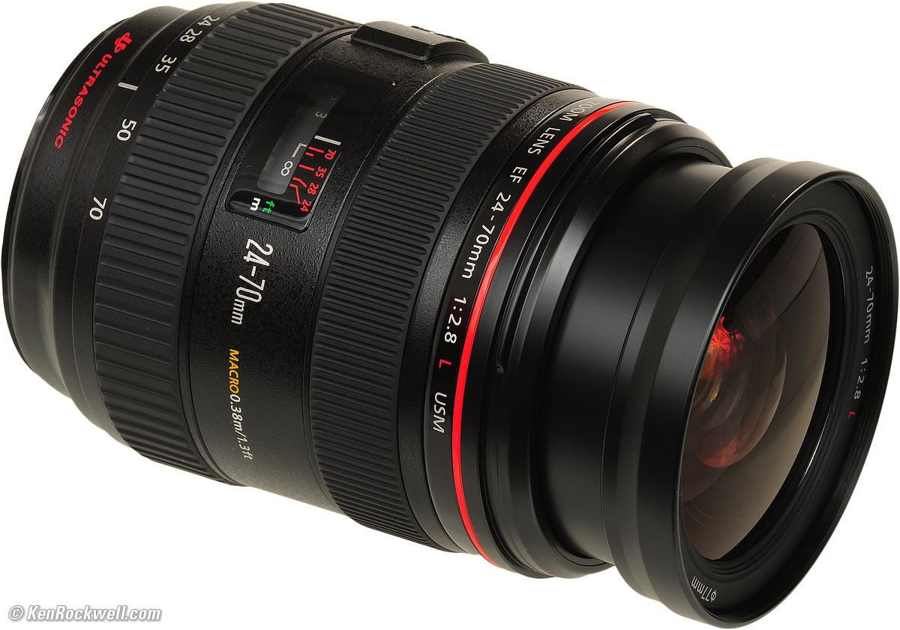
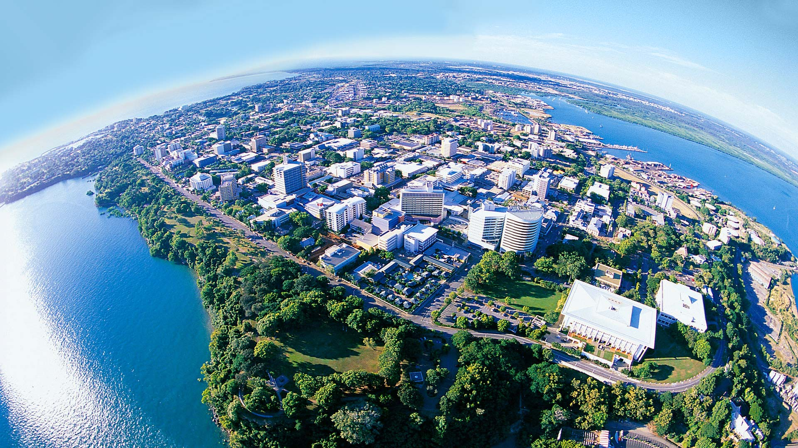
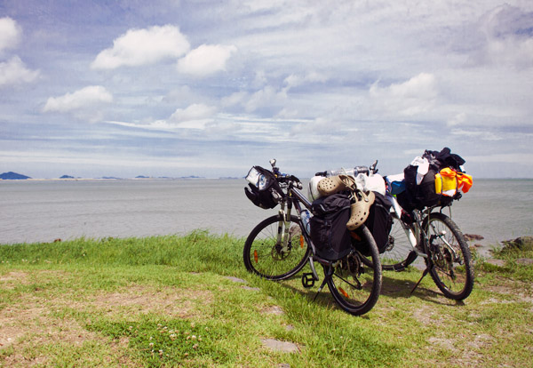

- 맥북프로
- 캐논 24-70mm 렌즈
- 호주 여행
- 일본 여행
- 자전거 여행
-
아이폰 앱 개발에 필요하다.
예전에는 아이폰 앱을 무시하기도 했었는데 인기가 많아서 요즘은 아이폰 앱도 거의 필수가 되었다.
 -
캐논 EF 24-70mm F2.8L II USM
여행용으로는 최적의 렌즈이다. 광각부터 망원까지 광범위한 화각을 자랑한다. 한 개의 렌즈만 갖고 다닌다면 이 렌즈를 추천한다.
 -
예전에 신혼여행 다녀왔던 곳 다시 가족여행으로 가기!
도시의 찌든 생활에서 벗어나 호주로 여행가서 힐링~!.
 -
일본 여행가서 배터지게 먹고 오기!
초밥, 우동, 라멘, 야끼니꾸 등 일본 음식 실컷 먹고 오기
-
일주일간의 자전거 여행
모든 것을 잠시 미뤄두고 일주일간 혼자서 떠나는 여행! 어디에서 잘 지 모르고 어떤 곳을 만날 지도 모르는 설레이는 여행!
